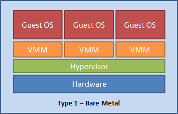
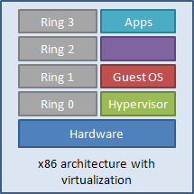
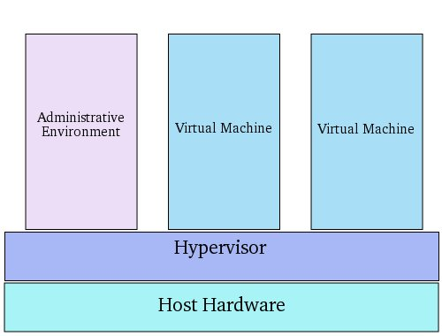

Introducción a la Virtualización
Unidad 1
Cátedra Consolidación TICs - FRCU-UTN - Ciclo Lectivo 2018
¿Qué es Virtualización?
Terminología
Host (anfitrión)
Guest (invitado)
Hypervisor / Virtual Machine Manager (VMM)
Hypervisores
El hypervisor o monitor de máquinas virtuales (VMM) es un programa que provee una capa de hardware virtual al S.O. que se ejecuta en el guest.
- Los S.O. ejecutándose en el guest "ven" el hardware virtual provisto por el hypervisor.
- Dependiento del hypervisor y del S.O. del guest, el S.O. del guest puede o no saber que se ejecuta virtualizado.
Hypervisores Tipo 1 - Bare Metal

Ejemplos: Xen, VMware GSX, Microsoft Hyper-V.
Hypervisores Tipo 2 - Hosted

Ejemplos: QEmu, VirtualBox, VMware Workstation
Virtualizar Hardware x86

- x86 tiene cuatro niveles de privilegios (conocidos como anillos TCB).
- El S.O. se espera que corra en el anillo 0 (donde tiene acceso directo al hardware).
- Las aplicaciones de usuario corren en el anillo 3 (donde tienen pocos privilegios).
Virtualizar Hardware x86 (cont.)
- Debido a que el hypervisor necesita acceso al hardware y se ubica debajo del S.O, ocupa el anillo 0 y desplaza hacia arriba al Sistema Operativo.
- El sistema operativo espera correr en el anillo 0, pero se encuentra en el 1...
Implentaciones de Virtualización de la CPU
- Virtualización Completa
- Paravirtualización
- Virtualización Asistida por el S.O.
- Virtualizacion Asistida por Hardware
Virtualización Completa

- El hypervisor emula todo el hardware subyacente (CPU, Memoria, E/S, Periféricos).
- Traducción de binarios / Ejecución directa.
- Permite correr S.O. sin modificaciones.
Paravirtualización
- Se modifica el kernel del guest para ejecutarse en el hypervisor.
- El kernel del guest convierte las operaciones no virtualizables en "hyper-llamadas".
- El hypervisor ejecuta las operaciones no virtualizables en nombre del kernel del guest.
- Al ser necesario modificar el kernel del guest, soporta guests con S.O. Open Source.
Virtualización Asistida por el S.O.

- Permite crear VPSs (virtual private servers) o "containers".
- Se aprovecha del diseño de los S.O. Unix y Linux.
- Los S.O. guest tienen su propio root FS pero comparten el mismo kernel.
- El S.O. del guest tiene que ser compatible con el kernel compartido.
Virtualización Asistida por Hardware
- Hace uso de las extensiones de virtualización del hardware
- Procesador
- AMD Virtualization (AMD-V)
- Intel VT
- Memoria
- AMD Nested Page Tables (NPT)
- Intel Extended Page Tables (EPT)
- E/S y Periféricos
- AMD I/O Virtualization Technology (IOMMU)
- Intel VT-d
Implentaciones de Virtualización de la CPU
- Virtualización Completa
- Open Source: Qemu, VirtualBox
- Comercial: VMWare Server, Microsoft Virtual Server
- Virtualización Asistida por el S.O.
- Open Source: LxC, OpenVZ, Linux VServer
- Comerciales: Parallels (Virtuozzo), Solaris Zones and Containers
- Paravirtualización
- Open Source: Xen
- Comerciales: VMware ESX Server, Microsoft Hyper-V
- Virtualizacion Asistida por Hardware
- Open Source: KVM, VirtualBox
- Comerciales: Microsoft Hyper-V
No solo consolidar el procesamiento...
Consolidación de Almacenamiento
Consolidación de Redes y Comunicaciones
¿Qué hay más allá?
"La Nube"
Gracias!
http://gabriel-arellano.com/consolidacion-tics/slides/2018/02-intro-virtualizacion/
Esta obra de Gabriel Arellano está bajo una licencia Creative Commons Atribución-CompartirIgual 4.0 Internacional.